Fase 1 · a caverna · a rocha da frente
21/10/2026 · → o salão vivo · ← a faixa atrás da nave · a rodada 1 · A sua Parede no "Aqui" do seu print: na frente da nave, sólida, a nave aparecendo pela aura. A nave fica parada e intocável, e os inimigos escondidos. Nada commitado.
fora )██████████( salão ……… 12 s ……… salão )██████████( fora
NA FRENTE da nave, 2,5× o mundo a mesma, espelhada
A passagem, em velocidade real
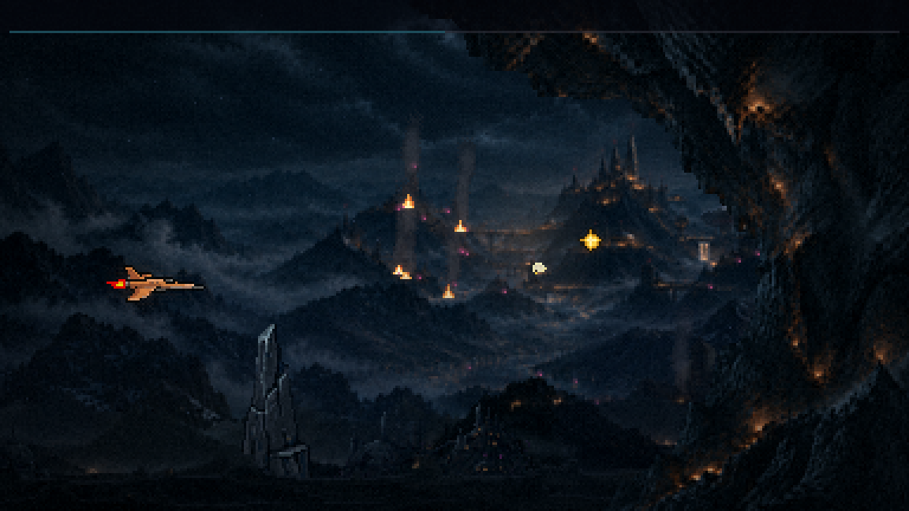
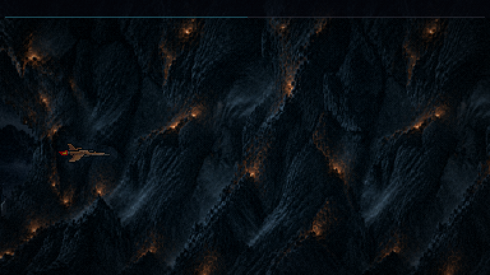
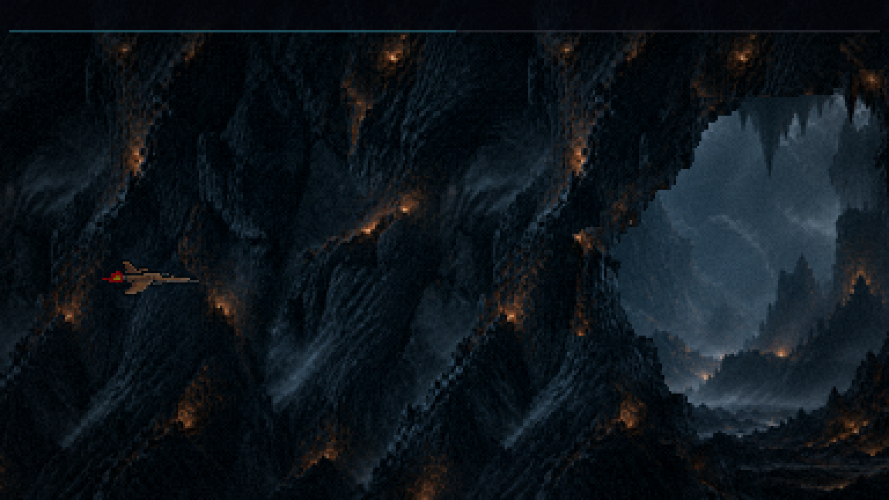
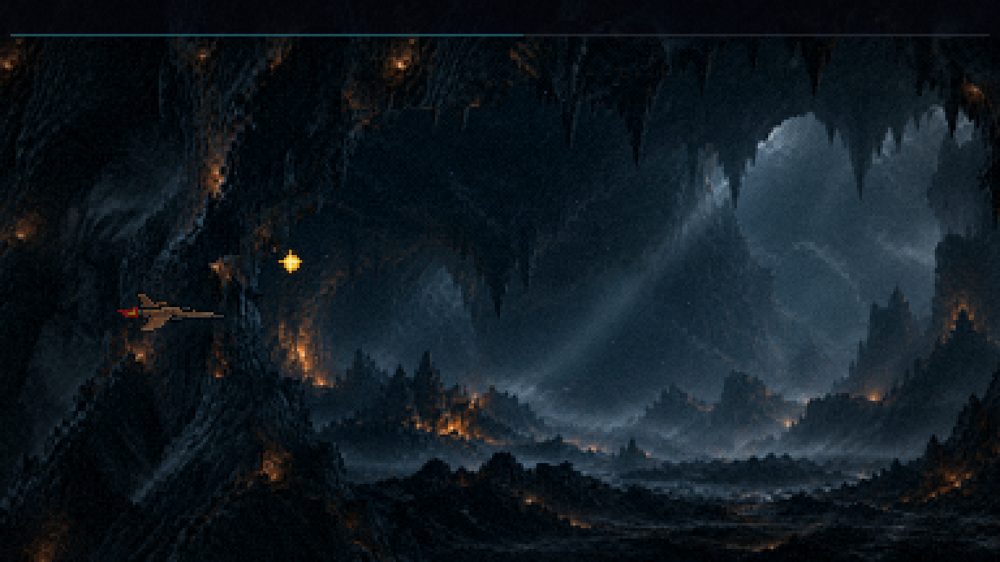
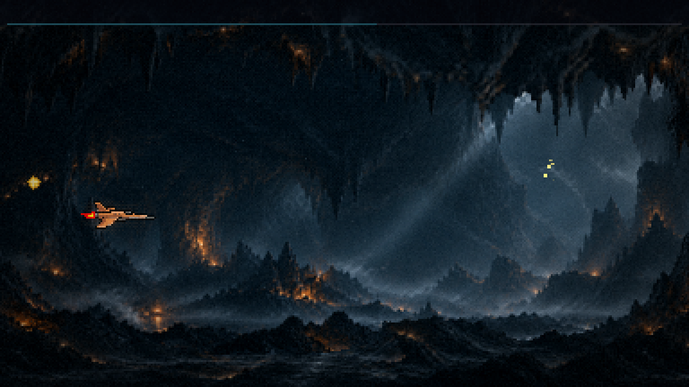
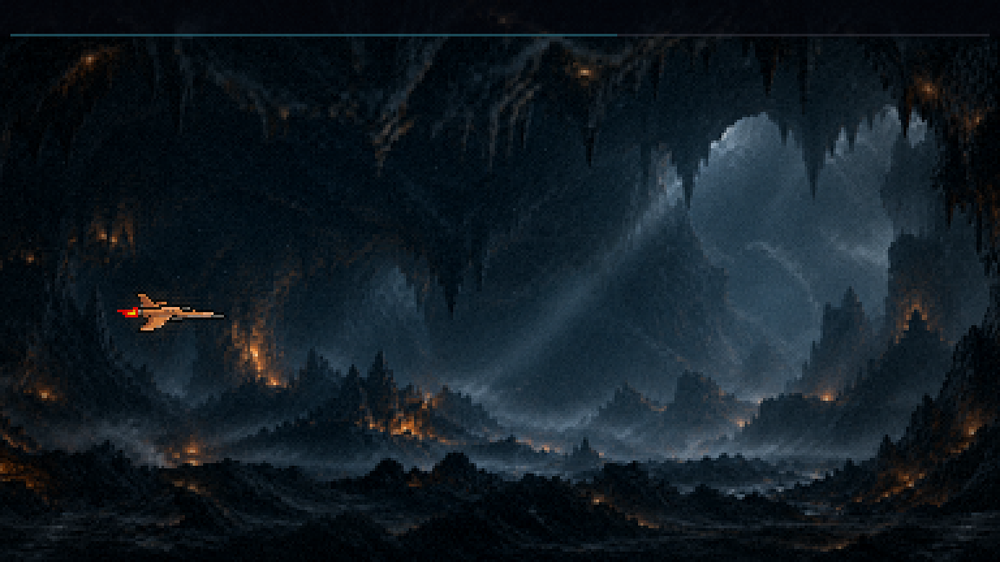
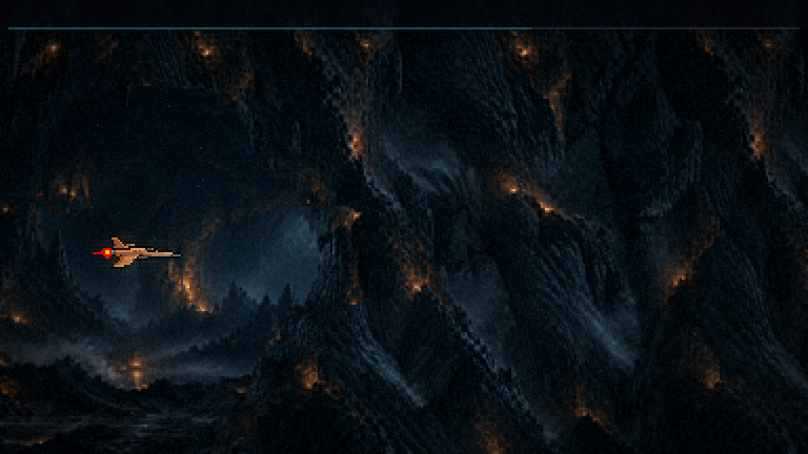
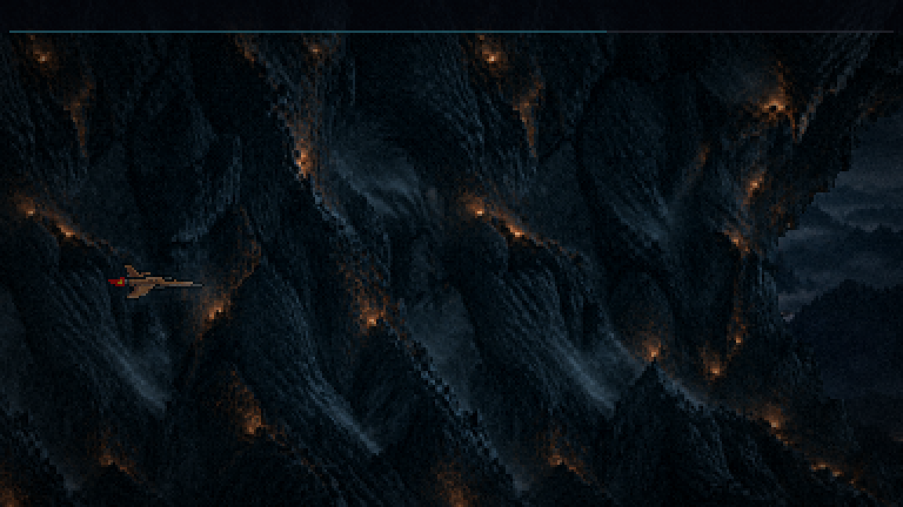
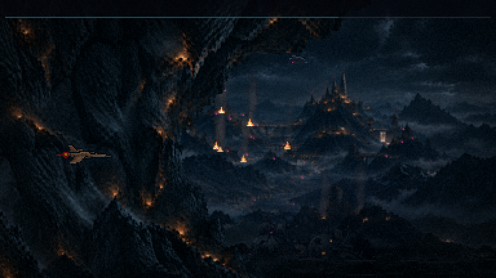
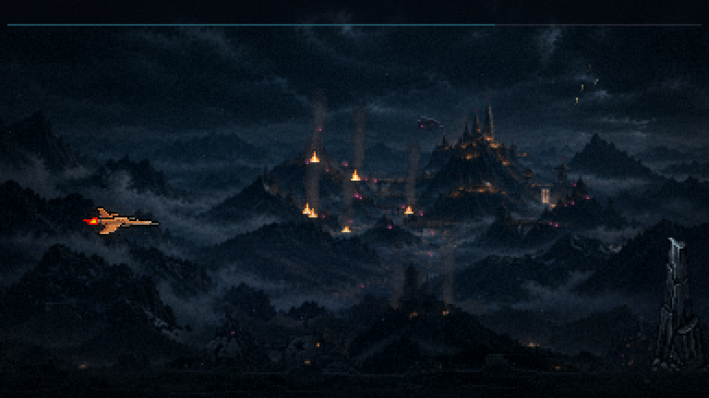
O que está no jogo
- A sua Parede passa na frente da nave e na frente do primeiro plano do chão. É a mesma faixa de antes (a boca ")" de um lado, a borda espelhada "(" do outro), agora com ~380 px de rocha no meio, para cobrir a tela inteira por um instante. O lado de fora sai pela esquerda antes de o salão entrar pela direita (o seu "obs."), e vice-versa na saída.
- Ela anda 2,5× mais rápido que o fundo, como uma camada mais perto da câmera: a nave fica ~2 s atrás dela.
- A aura (corrigida): a rocha continua pintada por cima da nave, só mais transparente em volta dela: 50% até 2 px da silhueta e 75% num anel de mais 3 px, em dois degraus de pixel, sem degradê. O resto fica sólido. A nave lê como atrás da rocha. A primeira versão abria um buraco na rocha, e a nave parecia passar na frente. A aura acompanha cada quadro do jato e a inclinação da nave.
- A troca de cena acontece no meio da rocha, escondida. O tom da caverna entra e sai ali também.
- O salão tem 12 s à vista. O teto e o chão só mordem onde o salão aparece; atrás da rocha, nada morde.
- A rocha passa na frente de tudo, então nenhum inimigo pode estar na tela quando ela cobre: ficaria escondido, atirando. Mudei de hora as ondas perto dela:
- a canhoneira, dos 35 para os 31,5 s;
- os batedores, dos 39 para os 36 s;
- os drones do salão, para 44,5, 46,5 e 48,5 s, porque a última onda tem que sair antes da rocha da saída.
- A fase: o resto do roteiro andou +16 s, e o chefão foi para os 84 s.
- Dois bugs da rodada 1, consertados:
- a mesa de cartas do meio da F1 ficou presa nos 63 s e abria no meio do FOGO CRUZADO. Agora ela anda com a caverna e abre aos 79 s, no silêncio antes do chefão;
- no instante em que a caverna começava, as peças apareciam por um quadro no canto esquerdo da tela.
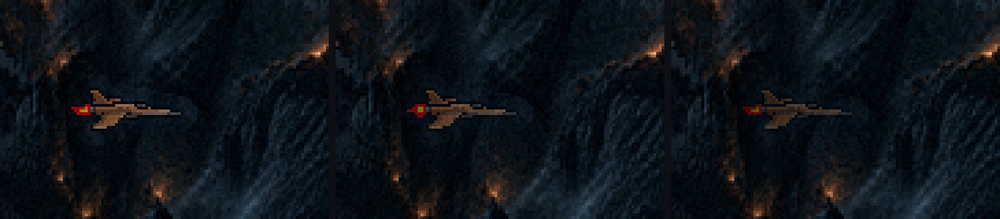

O que você decide
- A rocha da frente: a velocidade (2,5×), a cor (é a sua Parede como está; o primeiro plano do chão é mais escuro) e a transparência da aura (35%, 50% ou 65% de rocha por cima da nave).
- As ondas que mudaram de hora.
- A rodada 2: as estalactites e as pontas de rocha como obstáculos, as brasas tremulando e a cadência de tons.